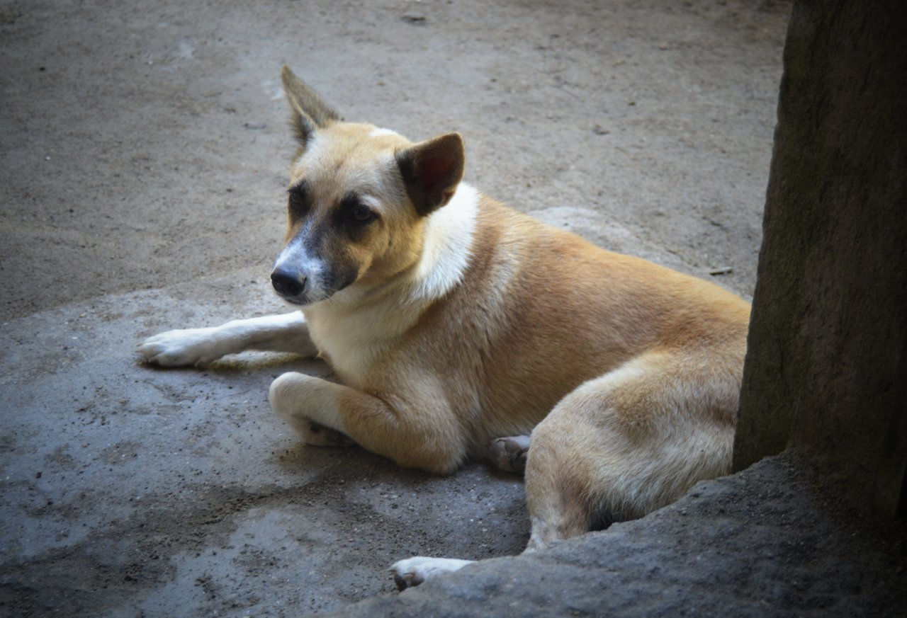
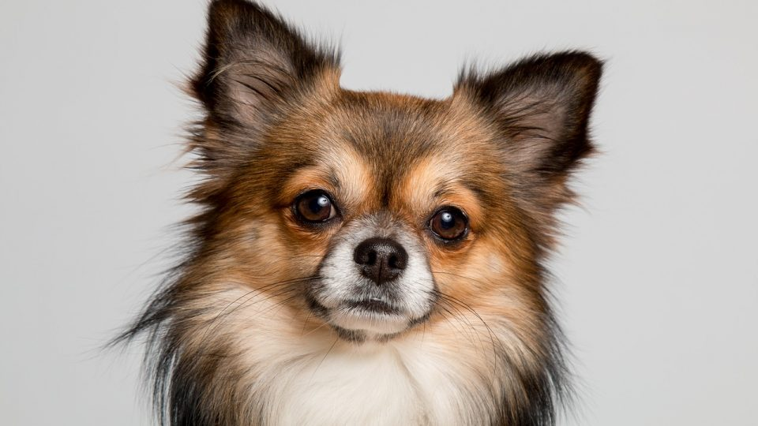

Aspins are warm, friendly, playful, and affectionate, and would be a loyal member of any family, returning their owner's love tenfold.

Chihuahuas possess loyalty, charm, and big-dog attitude. They are best known for their teensy size, big round eyes, and propensity to shiver and shake.
German Shepherds can be described as intelligent, curious, and obedient. Their loyalty is fierce and unwavering with a wariness to strangers.
With their snub noses, chubby cheeks, and long hair, Persian Cats are quite an exquisite breed. They're also typically quiet and affectionate cats who enjoyed being held, but they're content just lounging around too.
Siberian Cats have an outgoing and affectionate personality making them exceptional companies. They enjoy the company of other cats and dogs and they love playing with gentle, respectful children.

Siamese Cats are highly social, extroverted, and outgoing. They show immense loyalty and, like dogs, form strong bonds with humans. As their owner, you might find them constantly following you around and demanding your attention.